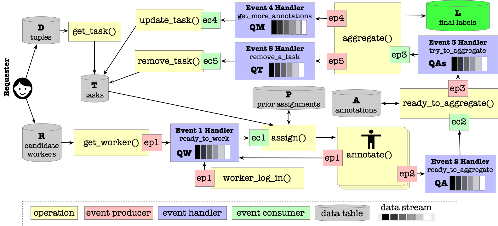

Execution Plan¶
Execution Plan of a Cymphony Workflow¶
A Cymphony workflow is a collection of Cymphony jobs and some simple functions (such as SQL queries). The connection between two jobs are quite simple, one will take the output of another job as input, either in a batch mode (i.e., taking all results at one shot) or in a streaming mode (i.e., taking a result once it is produced).
We will focus on discussing the execution plan of a Cymphony job.
Execution Plan of a Cymphony Job¶
Note that, a Cymphony job is initiated by a requester, who will invite a set of workers to manually annotate a collection of tasks. Generally speaking, it works as follows （please refer to the figure below).
{kind=link}
[Initialization.] A requester will upload the data for each tuple to be annotated, as well as inviting workers through emails. Those workers who both accept the invitation and pass the qualification test are ready to work for this job. Subsequently, multiple Event 1’s (ep1) will be produced, each per a newly qualified worker.
[Assignment.] For each Event 1 for a worker, [system] assigns a hit to this worker, in order to consume this event.
[Annotate.] Each worker who receives a hit will do manual annotation and commit the hit after finishing it. This commit will produce two events, one for Event 1 and the other for Event 2. Event 1 will be consumed by adding this worker back to the worker queue. Event 2 will be consumed by checking whether new annotations can produce final labels.
[Aggregate.] Each Event 2, produced from the above committed annotations, will be consumed by ready to aggregate(). If it is ready, it will produce an Event 3 that will be consumed by aggregate(). The aggregate() function may produce two events, Event 5 for removing a task, and Event 4 for modifying a task.
[Termination.] A job terminates when either the task table T is empty (i.e., each task has obtained a final label in L), or a requester actively terminates the job (e.g., enough labels have been collected). Otherwise, the job will keep running, waiting for new available workers to annotate, such that a final consensus on each task can be reached based on the aggregate() operation.
Events¶
Next we turn our attention to introduce the events in a Cymphony job.
Each event can be produced by multiple producers, and can be consumed by multiple consumers. Each event has one event handler that maintains a queue that receives input from one or more producers, and the consumer(s) will read and remove an item from this queue.
Event 1: Ready to work. This event happens when a worker is ready to work, either the worker is new, the worker committed a previous hit, or a qualified worker logged in the system.
Event producer (ep1): Three operations can produce this event: (i) the get_worker() operation will add a new qualified worker to the worker stream, (ii) the annotate() operation will add an already qualified worker after this worker commits a hit, (iii) a timed-out worker logs in the system again through the operation worker log in().
Event consumer (ec1): The assign() operation will consume this event, by assigning tasks to worker wid.
Event 1 handler: Maintain a queue QW, where each item in the queue is a worker id.
Event 2: Ready to aggregate: This event decides whether the current annotations for a task are ready to be aggregated.
Event producer (ep2): annotate() produces this event.
Event consumer (ec2): ready_to_aggregate() consumes this event.
Event 2 handler: Maintain a queue QA, where each item in the queue is an annotation in the form (tid, aid, ai).
Event 3: Try to aggregate: This event tries to aggregate the given annotations for a specific task.
Event producer (ep2): ready_to_aggregate() produces this event.
Event consumer (ec2): aggregate() consumes this event.
Event 3 handler: Maintain a queue QAs, where each item in the queue is an annotation in the form (tid, ⟨wj, aj⟩).
Event 4: Update a task: Update a task tid by modifying its num (tid.num).
Event producer (ep4): aggregate() produces this event.
Event consumer (ec4): update_task() consumes this event.
Event 4 handler: Maintain a queue QM, where each item in the queue is of the form (tid, num x).
Event 5: Remove a task: Remove a task, when its final label is obtained.
Event producer (ep5): aggregate() produces this event.
Event consumer (ec5): remove_task() consumes this event.
Event 5 handler: Maintain a queue QT, where each item in the queue is a task id tid.